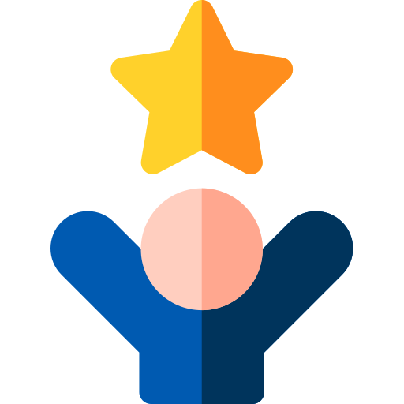
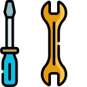
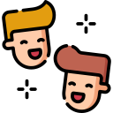

Wara2a W Alam
Wara2a W Alam


Home About Work Blog Features Contact us
Our services | ||
Events  | Talent Workshops  | Free Tuitions |
|---|---|---|
| We organize a diverse amount of events that mainly aim at establishing and sustaining good habits. Usually, the events are carrying a moral theme, but also we have a lot of fun. The events are mostly open to the public. Try it yourself and be part of our next event. | These workshops focus mainly on the specialized talent of each kid. We help them to discover their personality. They try almost all the different sorts of talents and finally pick what they most loved and suited them. | Not only do we care about the skills part, we also care about their grades and academic levels in the schools. That's why we provide free lessons to help them fully understand the school subjects. |
| Projects | Soft Skills & Academic Workshops  | Outings  |
| we have two project rounds throughout the year; one in each seamster. These projects aim to teach new skills through doing. After the duration of the project, we help kids to get products out of what they have learned. Then we organize a closing event for kids to present their products. We choose the topics of the project carefully. We analyze their needs and interests and try to include this in our project plan. | There are many workshops held throughout the year which aim to help children in acquiring a certain skill. It is also an asset that builds their skills for the project of the year. Workshops are tools to analyze child cognitive and emotional behavior. This helps us to provide more directed and personalized programs for them. | Because of all the hard work the children went through, through over the whole year; We have at the end to revenue them for their effort and tiredness. This is their favorite part. They play, gather, make friends, share achievements, and have a lot of fun. This day is always the happy end of every year's story. |